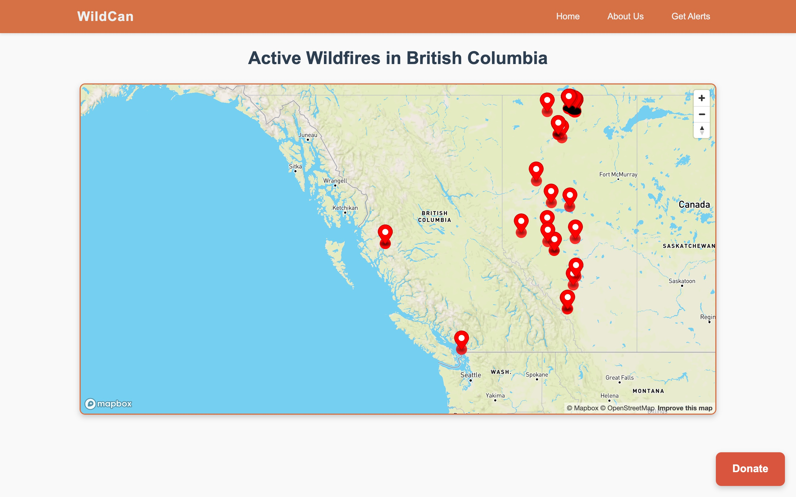
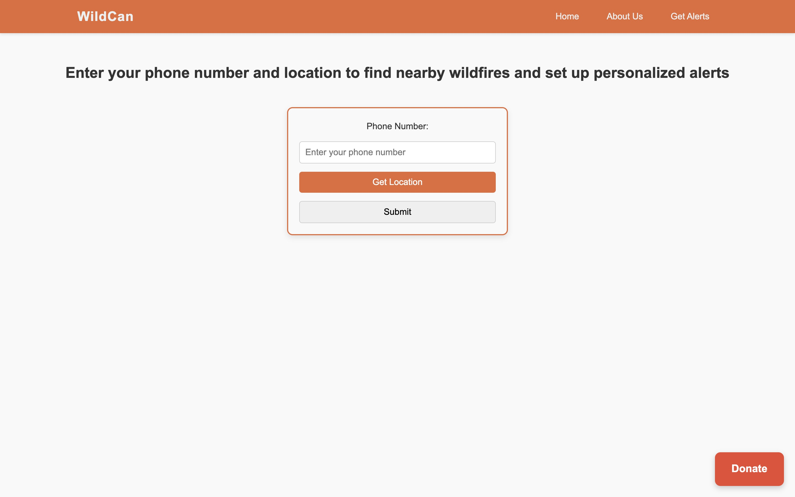
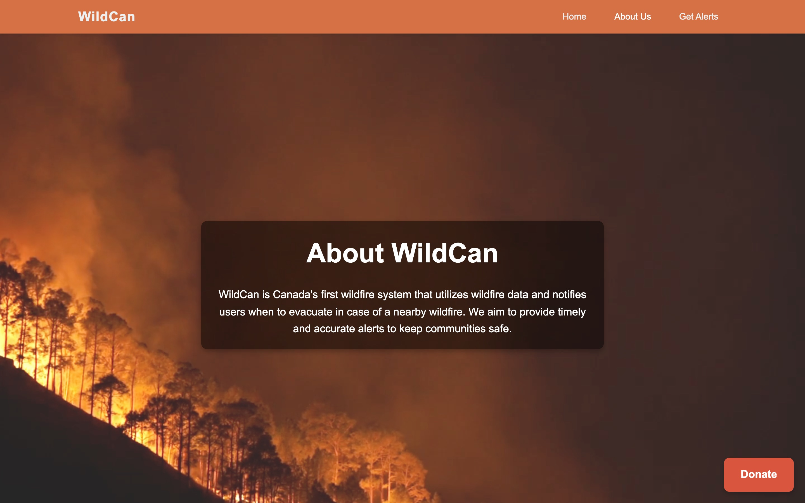

WildCan — Wildfire Detection Web App

WildCan is a real-time wildfire tracking and alerting platform built over the weekend at nwHacks 2025 — a hackathon project by a team of four first-year UBC students, and our first major hackathon. It pulls live satellite fire-detection data, plots every active fire on an interactive map, and sends an SMS to anyone whose saved location falls inside a fire’s estimated impact radius.
The goal was something with real impact for British Columbia, where wildfire season is a yearly threat: turn raw satellite data into a warning that actually reaches a person’s phone in time to act.
How it works
WildCan is a small full-stack app wired around a single source of truth — a MongoDB database that holds both live fire detections and registered users:
- Fire-data ingestion. A scheduled Python job polls the NASA FIRMS API (VIIRS near-real-time satellite detections) for fires across Canada, parses the CSV feed, and refreshes the fire collection in MongoDB Atlas so the map always reflects current activity.
- Map visualization. The front end loads Mapbox GL JS, centers on BC, and fetches the latest coordinates from the backend, dropping a marker on every detection plus an animated canvas “pulsing dot” layer to draw the eye to active hotspots.
- User registration. The Get Alerts page captures a phone number and uses the browser’s Geolocation API to grab the user’s coordinates, then POSTs them to a Flask API that validates and stores the user.
- Proximity alerts. A notifier computes the Haversine distance between each user and every active fire; if a fire falls within the alert radius, it fires off a location-based warning over Twilio SMS.
- Relief funnel. A persistent Donate button links out to a UBC wildfire relief fund, so the app can convert awareness into action.
Get Alerts & About
Users opt in from a simple form — enter a phone number, share location with one tap, and submit. Their coordinates are stored and checked against every incoming fire detection.


Stack
- Front end: HTML / CSS / JavaScript, Mapbox GL JS, browser Geolocation API
- Back end: Python (Flask) REST API with CORS, Node.js tooling
- Data: MongoDB Atlas, NASA FIRMS satellite fire feed (VIIRS NRT)
- Alerts: Twilio SMS, Haversine proximity check
- Built: nwHacks 2025, team of four
What we built
As a team of four first-year students at our first major hackathon, we scoped WildCan to be genuinely demoable end to end in a weekend: real satellite data in, a live map out, and a real SMS landing on a phone. Getting the pieces to talk to each other — the FIRMS feed into MongoDB, MongoDB out to both the Mapbox front end and the Twilio notifier — was the bulk of the work, along with handling the browser geolocation handshake and keeping the map responsive while plotting hundreds of detections.
For the demo we inflated the alert radius so a single test fire would reliably trigger a text; in a real deployment that threshold would sit around 50–100 km. The screenshots above are running against live NASA FIRMS data, so the map reflects fires burning in BC right now.
If we took it further, the next steps would be per-fire impact-radius sizing from detection intensity, de-duplicating clustered detections into single incidents, and a proper account system so users can manage multiple saved locations.